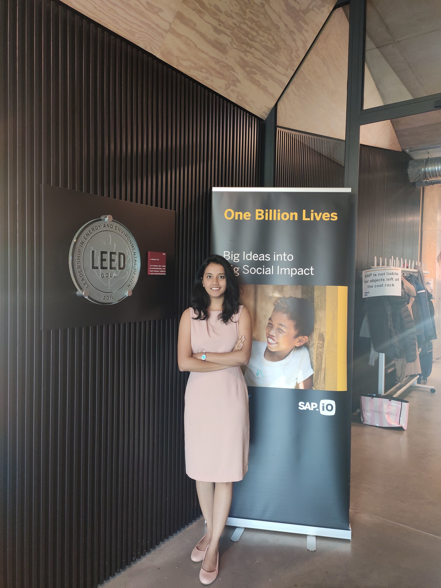

Overview
CrisisAid aims to help people during the aftermath of a disaster by bridging the gap between the people who
need help and the organizations who can provide it. The problem today is that when people try to reach out,
they call the helplines like 112 or 108, but due to heavy volume of incoming calls, many calls do not even
reach these helplines, and the ones which do connect have at least 10-15 minutes wait time.
CrisisAid
 In 2019, series of floods affected thirteen states in various states of India, due to excessive rains.
At least 200 people died and about a million people were displaced. Karnataka and Maharashtra were the
most severely affected states. Millions of food packages and relief material was shipped to the affected
areas but the load on the government and non-profit organizations was too high. To help curb the
situation, I used an opportunity provided by my employer “SAP labs India” for developing a solution
to aid the disaster response process. I joined hands with three more colleagues who were willing to
work towards this cause and co-founded CrisisAid.
In 2019, series of floods affected thirteen states in various states of India, due to excessive rains.
At least 200 people died and about a million people were displaced. Karnataka and Maharashtra were the
most severely affected states. Millions of food packages and relief material was shipped to the affected
areas but the load on the government and non-profit organizations was too high. To help curb the
situation, I used an opportunity provided by my employer “SAP labs India” for developing a solution
to aid the disaster response process. I joined hands with three more colleagues who were willing to
work towards this cause and co-founded CrisisAid.
I began talking to numerous stakeholders in the government and non-profit organizations to understand
the pain points and their existing processes to help people affected by the calamities. After
interviewing the stakeholders we identified this problem. Within a period of two weeks we developed
a working MVP. The next step was to deploy this solution and see the success by running a pilot.
We teamed up with an NGO based in Bangalore and fine-tuned the solution to test the MVP in multiple
states in India.
My Journey
As a social entrepreneur I grew a lot as an individual professionally and personally. For CrisisAid, I handled all the business aspects and wore multiple hats. I worked with multiple stakeholders in transforming this idea into a viable business. I performed the customer engagements, built business roadmap, conducted competitive analysis, developed the business model strategy. Personally, this experience has left me feeling more powerful. I now know that with enough will and courage we all can create a positive impact on this world and help transform lives.
My Motivation
My father, Mr. Shailendra Deshmukh was a dedicated BMC officer, I had always seen him work 10 times harder when disasters struck the city of Mumbai. He used to always say that “The greatest work is the work done for the society in the toughest times.”